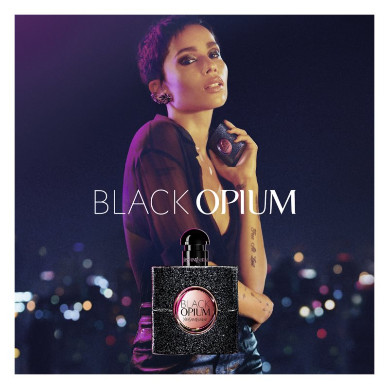

un parfum oriental intens, potrivit pentru lunile de iarnă
pentru femei energice și încrezătoare
ideal pentru seară, întâlniri și ocazii deosebite
Compozitie
Note de varf
PIPER ROZ, PARA, FLORI DE PORTOCAL
Note de inima
IASOMIE, CAFEA
Note de baza
VANILIE, CEDRU, PATCHOULI
Grupe de parfumuri
ORIENTALE
Povestea parfumului
Yves Saint Laurent Black Opium este un parfum inspirat din muzică. Compoziția sa reprezintă expresia tainică a dorințelor intime, a senzualității și a stilului de viață spontan și liber. Aroma emblematică aromă fost lansată în anul 2014, în concentrația de apă de parfum.

Inapoi la pagina "Parfumuri pentru femei"...